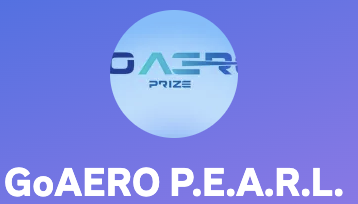

About Me
Work Experience

Research Assistant
Toronto Metropolitan University (Spring/Summer 2023, Spring/Summer 2024)
- Achieved average Dice Similarity Coefficient (DSC) scores of 93% (test) and Jaccard Similarity Index of 89% (train) by devising a deep learning neural network in MATLAB for binary 3D segmentation of Pectoralis muscles from Chest CTs.
- Achieved average Dice Similarity Coefficient (DSC) scores of 93% (test) and 90% (test) by devising a deep learning neural network in MATLAB for binary 3D segmentation of Left Hemidiaphragm.
- Developed a deep learning based pipeline that reduced the duration of the segmentation process of the pectoralis from chest CT from 4 hours to 2 minutes.
- Conducted statistical analyses on model performance and extracted biomarkers to assess significance, employing techniques such as regression analysis, correlation analysis, t-tests, ANOVA, and ANCOVA.
- Developed an image processing pipeline to aid in the creation of ground truth masks of the diaphragm from Chest CTs.
- Created a library of functions and scripts to streamline manual annotation processes.
- Developed an algorithm for anomaly detection in model segmentations.
- Authored an academic abstract submitted to Imaging Network of Ontario, 2025.
- Co authored an academic abstract submitted to American Thoracic Society, 2024.
Work Experience
Web Developer
MZ Tutors (April - June 2024)
- Developed a web application using React, Firebase, and JavaScript to manage tutoring schedules and student progress.
- Utilized Google Firebase Firestore to store and fetch data, ensuring real-time updates and reliable data management.
- Implemented an admin interface for managing and editing tutor and student schedules.
- Enabled tutors to update student progress and provide feedback through the application.
- Designed features allowing students to view their schedules and track their progress.
- Ensured seamless integration of backend and frontend components to enhance user experience and application functionality.
Education
Bachelor of Engineering in Computer Engineering, 2022-2026
Toronto Metropolitan University, Formerly Ryerson
Dean's List Honoree 2022-2024
- Completed coursework in
- Data Structures & Algorithms
- Object Oriented Programming
- Microprocessor Systems
- Signal and Systems
- Database Systems
- Circuits
- Logic Design
- VLSI Design and Signal Processing
Extra Curricular
Active member of GoAero P.E.A.R.L. Student Club
- Led software team for autonomous aircraft in a rescue mission competition.
- Integrated deep reinforcement learning-based ArduPilot software for autonomous navigation and payload transport.
- Planned future enhancements, including fail-safes, payload stability, and transfer learning to optimize flight performance.